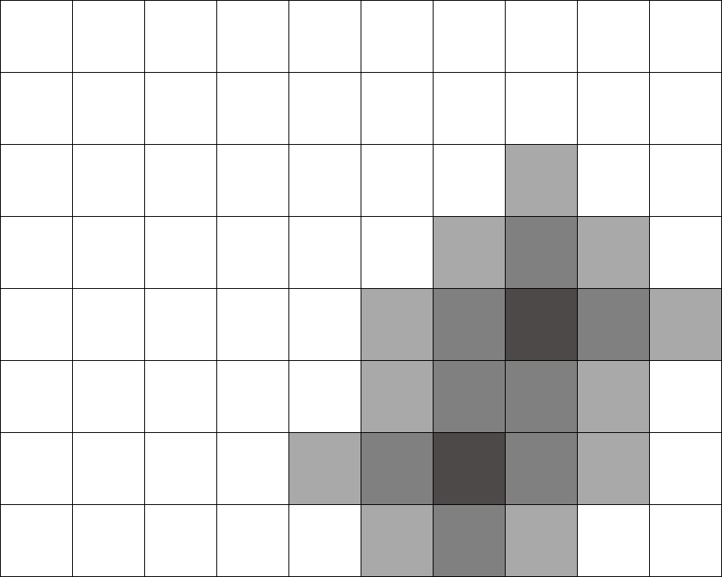

Strawberry Map
Всяка ягодка е представена като кутийка. Всяка кутийка има цвят отговарящ на състоянието на ягодката. Ако цветът на кутийката е бял това означава, че ягодката все още е здрава, двете най-тъмно сиви кутийки са първите две развалени ягодки.След това малко по-светло сивите са ягодките развалени след първия ден, още по-светлите - през втория и т.н. (Ягодките развалени от 4 -тия ден нататък са с еднакъв нюанс на сивото.(най-светлото в случая)
